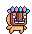
LIO
Cátedra:
Docentes: Fabien M. Pineda · Hernan I. Hernandez · Juan I. Carubia

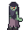
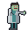
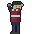
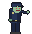
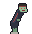
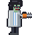
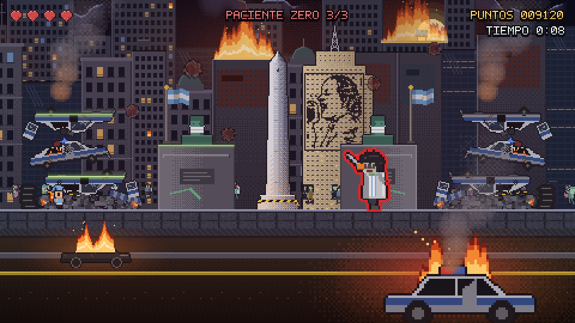
Plataformero 2D de acción arcade hecho en GDevelop. Buenos Aires tomada por un virus zombie: Lio, el único inmune, cruza la ciudad hasta el Obelisco para enfrentar al científico que empezó todo.
Integrante: Walter Frías
Trabajo individual — Entrega final · Noviembre 2026
Los apartados siguen la plantilla del Documento de Diseño de Juego (DDJ) de Thompson, Videojuegos — Manual para diseñadores gráficos, págs. 106–107.
Los diez puntos de la consigna oficial de la cátedra y dónde se cumple cada uno en el juego y en este documento.
| # | La consigna pide | Cómo lo cumple Paciente Zero | Dónde verlo | Estado |
|---|---|---|---|---|
| 1 | Género plataformas 2D | Plataformero 2D de acción arcade: correr, saltar, trepar y planear (comportamiento Platformer Character de GDevelop). Se combate solo cayéndoles encima a los zombies. | Mecánica de juego; Walkthrough | ✅ |
| 2 | Modalidad, preferentemente grupal | Trabajo individual. La consigna lo plantea como preferencia, no como requisito. Se eligió por experiencias anteriores con grupos donde no todos participaban parejo. | Portada | ✅ (individual) |
| 3 | Al menos 3 niveles + un tutorial de práctica | Tutorial (el refugio, sin forma real de perder) + Nivel 1 La costanera + Nivel 2 El laboratorio + Nivel 3 Del laboratorio al Obelisco, con el jefe final. | Walkthrough y mapas | ✅ |
| 4 | Duración total de 30 minutos | Contenido: 3 niveles largos (2600, 3800 y 2620 px), 4 antídotos y 3 notas por nivel en rutas opcionales y una pelea final en 3 fases. Un reloj en pantalla mide el tiempo de cada nivel. La primera partida completa lleva entre 15 y 30 minutos, según la habilidad del jugador. | Resumen del Walkthrough; Game Testing | ✅ (15–30 min) |
| 5 | Manual de uso (opcional) | No hay un manual aparte: los controles se enseñan jugando en el Tutorial, cartel por cartel, y la pausa tiene la ayuda con todas las teclas. El apartado Controles de este GDD los reúne. | Controles; Tutorial | ✅ (opcional) |
| 6 | Menú de opciones | Menú principal: Jugar / Opciones / Salir y la tabla TOP 5. Opciones: volumen de música (← →) y de efectos (↑ ↓). Pausa (ESC o P), en los 3 niveles: los mismos dos volúmenes, R reiniciar, M volver al menú, I abrir la mochila con las pruebas, ESC/P reanudar. | Sistemas de menú | ✅ |
| 7 | Sonidos: de fondo y de colisiones, como mínimo | De fondo: música del menú y loop de los niveles, más ambiente: zumbido de los tubos del lab, crepitar del fuego. De colisión: pisotón (sube de tono con la cadena), daño, agarrar antídoto o nota. Además: salto, victoria, game over, chispazo, gatillo y disparo del policía. Todo generado por código, sin bancos de sonidos ni IA. | Diseño de sonido | ✅ |
| 8 | Motor web (GDevelop o Construct3) | GDevelop, nombrado en la consigna. Exportado a HTML5: se juega en el navegador y está publicado en itch.io. | Diseño de programación; Plataforma | ✅ |
| 9a | GDD: tema o temática con narrativa propia | Buenos Aires tomada por un virus zombie; Lio, el único inmune, va del río al Obelisco a enfrentar al científico que lo soltó en pleno festejo. La historia se cuenta sin diálogos, con 7 notas del diario del villano repartidas por los niveles. | Sinopsis de la historia; Guión (las 7 notas) | ✅ |
| 9b | GDD: ficha del personaje | Ficha de Lio en el capítulo Personajes, actualizada desde la primera entrega: rol, arquetipo, habilidad, sprite, paleta y animaciones, más el antídoto y la mochila con sus paletas. | Personajes | ✅ |
| 10 | Video pitch de hasta 5 minutos | Pendiente; se graba sobre el build final. | — | ⏳ pendiente |
| Fecha | Entrega |
|---|---|
| Sep. 2026 | Ficha de personaje (primera entrega) |
| 18/09/2026 | Avance del GDD + High Concept, para devolución |
| 29/09/2026 | Pre-entrega Pre-Alfa: prototipo con core loop, física y niveles; foco en Game Testing |
| 03/11/2026 | Entrega final: juego, GDD final y video pitch |
El avance era una versión de trabajo, con el Nivel 1 jugable y el resto en diseño. Lo que cambió desde entonces:
Contenido nuevo
Sistemas nuevos
Correcciones de lo que decía el avance
Lo que había quedado pendiente en el avance, y quedó resuelto:
Concepto de juego. Plataformero 2D de acción arcade en pixel-art. Un virus zombie toma Buenos Aires y Lio, el único inmune, cruza la ciudad para enfrentar al científico que lo soltó. Lo que lo distingue:
Elementos característicos de la jugabilidad:
Consideraciones de mercado:
| Público | 12+ (equivalente a PEGI 12): violencia fantástica sin sangre. Jugador casual, curioso más que competitivo, con afinidad por el pixel-art y las plataformas clásicas, de adolescentes a adultos de 40+. |
| Atractivo | Partida corta (15–30 min la primera vez), tutorial sin riesgo, dos mecánicas que se entienden en segundos (pisotón y correr sobre la horda) y la identidad local, que es poco común en el género. |
| Referentes | Super Mario Bros. (el pisotón como único ataque), Zombies Ate My Neighbors (el tono: zombies con humor, sin terror), Donkey Kong Country (montarse sobre el escenario en movimiento). |
| Oportunidad | Juego web gratuito, sin instalación: se juega desde un link de itch.io, lo que facilita compartirlo y probarlo con gente. |
Plataforma. Navegador de escritorio (export HTML5 de GDevelop), con teclado. Publicado en itch.io. Quedan fuera de alcance: móvil y pantalla táctil, y consolas.
Apartados "Sinopsis de la historia" y "Guión del juego" de la plantilla del DDJ (Thompson, págs. 106–107). Cubre el punto 9.a de la consigna: tema o temática con narrativa propia.
Buenos Aires, la noche del festejo. Miles de hinchas se abrazan en el Obelisco y un científico aprovecha la multitud para soltar un virus que convierte a la gente en zombies obedientes. En pocos días la ciudad está tomada (el diario del villano llega hasta el día 12), y el juego transcurre de noche. Lio, un pibe común con la camiseta de la Selección, es el único al que el virus no le hace nada. Sin armas y sin entrenamiento, se abre paso desde la costanera hasta el laboratorio donde empezó todo, y de ahí hasta el Obelisco, para enfrentar al responsable: Paciente Zero.
Arcade retro en pixel-art, más cerca de Zombies Ate My Neighbors que del survival horror: hay zombies y una ciudad en llamas, pero no hay sangre y el humor aparece en los detalles. Por ejemplo:
La ciudad es reconocible: la costanera, el Obelisco, la avenida Corrientes, fachadas porteñas, colectivos, patrulleros y pintadas en los muros ("Las Malvinas son argentinas", Patricio Rey y sus Redonditos de Ricota, "Yo apoyo la Ley de Financiamiento Universitario").
| Escena | Qué pasa en la historia | Qué descubre el jugador |
|---|---|---|
| Tutorial — El refugio | Lio sale de su refugio. Cartel de arranque: "Buenos Aires cayó ante el virus zombie. Lio es inmune: ¡llevalo hasta el origen!" | Los controles, sin peligro. |
| Nivel 1 — La costanera | Primer contacto con el brote, de noche junto al río: vecinos convertidos, virus que vuelan solos y una estampida de zombies que Lio usa de puente para cruzar el río. Encuentra la mochila de un repartidor que huyó. | N1 "El plan": el brote no fue un accidente. N2 "Remito": de quién era la mochila. N3 "Mensajeros": por qué los virus vuelven más fuertes a los zombies. Cartel final: "¡Llegaste al laboratorio!" |
| Nivel 2 — El laboratorio | Lio entra al laboratorio donde se fabricó el virus. El personal ya está convertido: médicos, enfermeras e investigadores. Hay tubos de contención con virus, algunos rotos. | N4 "Personal": cómo cayó el equipo. N5 "El antídoto": por qué hay frascos de cura sueltos por la ciudad. N6 "Anomalía": el villano ya sabe que existe alguien inmune, con una mochila de delivery. Cartel final: "¡Llegaste al corazón del lab!" |
| Nivel 3 — Del laboratorio al Obelisco | Lio sale a la calle y cruza el centro tomado, entre edificios tapiados con cruces de cuarentena, autos quemados y banderas. Vuelven todos los zombies que encontró en el camino. Al pie del Obelisco, donde empezó el contagio, lo espera Paciente Zero. | N7 "Última página", que suelta el jefe al caer: por qué lo hizo. Cartel final: "¡Derrotaste al Paciente Zero! Buenos Aires está a salvo." |
Paciente Zero es el científico del laboratorio, sin nombre propio: firma "P.Z.". No quería destruir el mundo, quería que le hicieran caso: "un ejército que no protesta, no vota, no pide aumento". Eligió Buenos Aires porque "si funciona acá, funciona en cualquier lado", y eligió el festejo porque "el mejor contagio es la alegría".
Tiene la misma camiseta que Lio debajo del guardapolvo: los dos son de la misma ciudad y de la misma hinchada, y están de lados opuestos. Al final es un zombie más, de su propio virus, solo que más grande.
La historia se cuenta sin diálogos ni cinemáticas, para no cortar el ritmo arcade:
Las notas están ordenadas para que el misterio se arme de a poco:
| Nota | Revelación |
|---|---|
| N1 | Fue a propósito. |
| N2 | El detalle cómico de la mochila. |
| N3 | Cómo funciona el contagio, justo antes de la zona con más virus. |
| N4–N5 | El laboratorio por dentro y la existencia de una cura. |
| N6 | El villano ya sabe que Lio existe. |
| N7 | El motivo, recién al vencerlo. |
Escritas en mayúsculas, en la fuente pixel del juego: hasta 30 caracteres por línea y 8 líneas por nota.
| # | Título | Tipo | Dónde está |
|---|---|---|---|
| 1 | El plan | diario | L1, x ≈ 1232, sobre la horda |
| 2 | Remito | remito | L1, x ≈ 1010, junto a la mochila (la primera que se encuentra) |
| 3 | Mensajeros | diario | L1, x ≈ 2220, en la zona de virus del final |
| 4 | Personal | registro | L2, sobre el estante largo (x ≈ 1125) |
| 5 | El antídoto | diario | L2, en el ducto opcional del final (x ≈ 3409) |
| 6 | Anomalía | diario | L2, en el piso justo después del gabinete (x ≈ 3168) |
| 7 | Última página | diario | L3, la suelta Paciente Zero al caer |
Así se ven en el juego (el arte de cada nota tiene el texto incluido):
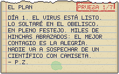
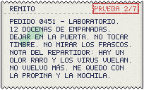
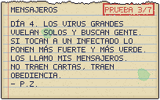
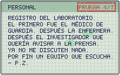
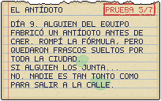
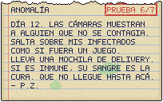
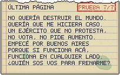
Estilo. Pixel-art a 480×270 (un cuarto de 1920×1080), contorno de 1 px y sprites de 32×34. Paleta de noche: azules y violetas oscuros, con la luz como acento (ámbar del fuego y los faroles, verde tóxico del laboratorio, rojo de las alarmas). El criterio general: oscurecer todo y devolver la luz solo donde importa, para que Lio, los zombies y las plataformas se lean contra el fondo.
Cómo se hizo el arte. Todo el arte (zombies, jefe, props, fondos, luces, notas, interfaz y la fuente pixel) se generó por código con Python y la librería Pillow, sobre una paleta compartida. No se usaron packs de terceros ni generadores de imágenes por IA: se descartaron porque no mantienen el personaje igual de un cuadro al otro. La única excepción es la base del sprite de Lio (CC0, ver Créditos).
| Escena | Ambientación |
|---|---|
| Menú | Skyline de noche en movimiento, la Luna, el Obelisco, zombies que caminan detrás de Lio. Subtítulo: "Buenos Aires — Noche cero". |
| Nivel 1 — La costanera | Noche con luna y nubes, niebla sobre el río, fuego en tachos y faroles de sodio. Ciudad en 4 planos de parallax (la Luna casi quieta, el Obelisco acompañando de lejos). Incendios lejanos con humo. La luna "pinta" el borde de arriba de cada objeto; Lio y los zombies toman un tinte frío que se entibia cerca del fuego. Pintadas en el muro. |
| Nivel 2 — El laboratorio | Luces de terror clase B: tubos que fallan, se cortan y chispean, con su zumbido. Zonas a oscuras con islas de luz verde (tanques) y cian (monitores). Por los ventanales se ve la ciudad de noche. Debajo del piso, el subsuelo: cañerías y tubos de contención con virus flotando, algunos rotos. Al final, zona de alarma con balizas rojas que barren. |
| Nivel 3 — Del lab al Obelisco | El centro entre edificios: fachadas porteñas (francés, departamentos de los 60, PH, bar de esquina), tapiadas, con vidrios rotos y cruces de cuarentena. Detrás, dos filas de edificios en parallax con cúpulas, tanques, antenas e incendios en los techos. En la calle: autos quemados, patrulleros con sirena, un colectivo cruzado, un taxi volcado, conos y escombros, y 8 banderas argentinas apagadas para la noche. Una multitud de infectados en silueta en la vereda de enfrente. Arena, la 9 de Julio: el Obelisco con reflector y cinta de cuarentena; detrás, la torre crema del ex Ministerio de Obras Públicas con el mural de Evita; a los costados, dos pilas de patrulleros destruidos (una barricada policial que se vino abajo) que humean, con la sirena que todavía titila; bustos de próceres con barbijo y coronavirus gigantes flotando en el cielo. |
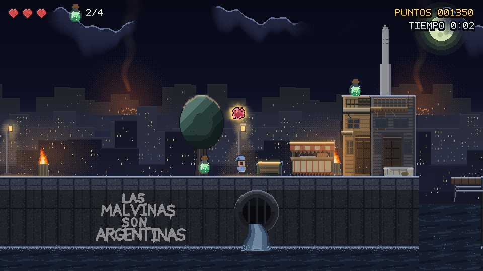
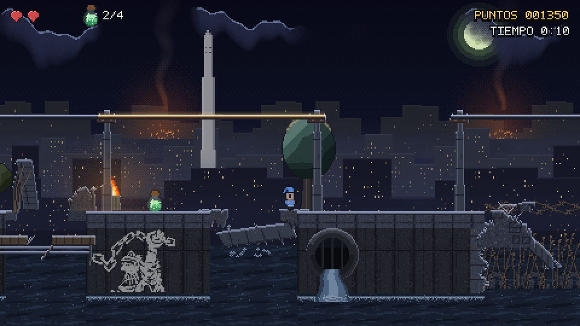
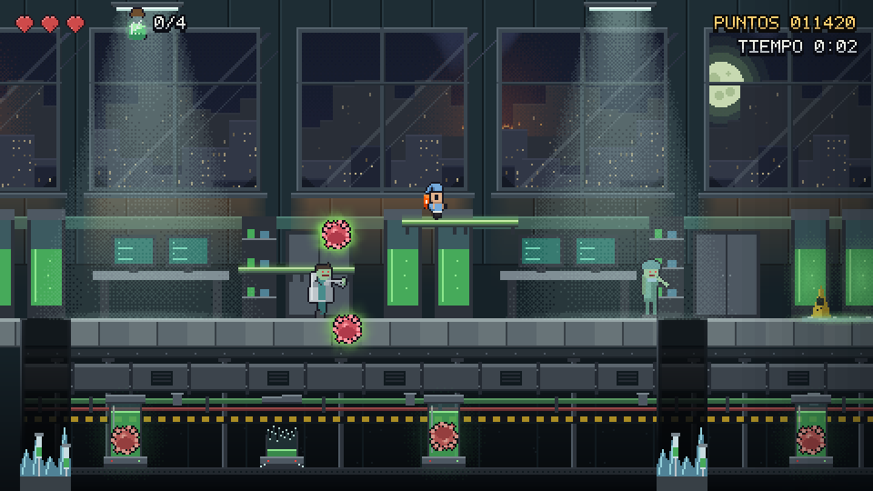
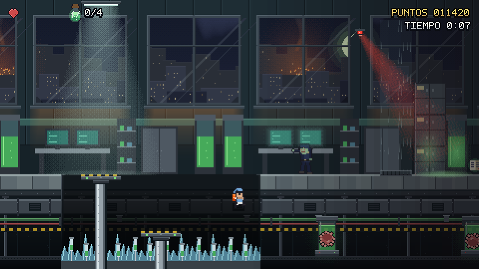
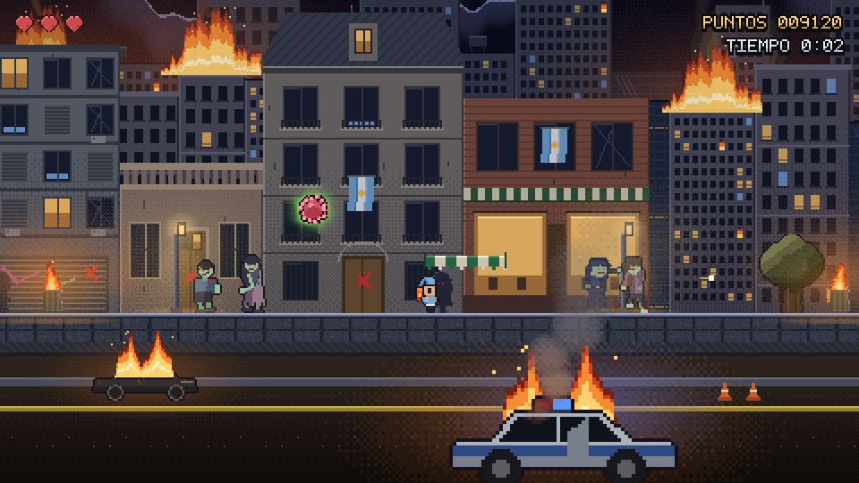
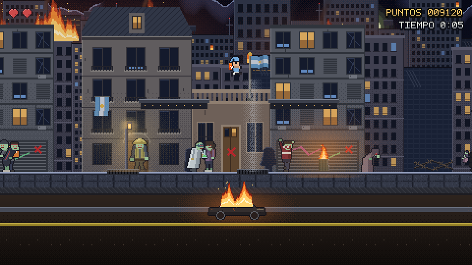
Todos dibujados por código, como en el avance; tamaño en píxeles del juego.
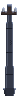
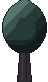
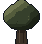
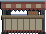
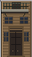
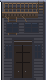
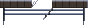
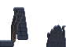
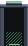
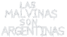
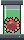
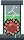
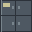
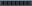
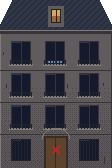
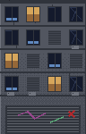
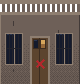
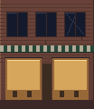
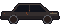
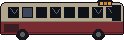
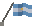
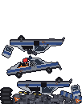
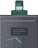
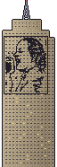
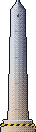
Apartados "Objetivo del juego" y "Mecánica de juego" de la plantilla del DDJ (Thompson, pág. 107: "enumera e ilustra las mecánicas que se van a utilizar").
Avanzar → leer el obstáculo que viene (un zombie, un virus, un pozo, un pistón) → resolverlo saltando: pisar, esquivar o subirse → pasar un checkpoint → seguir hasta la meta → desglose del puntaje → siguiente nivel.
Todo se resuelve con moverse y saltar: no hay botón de ataque. Cada mecánica nueva es una variación de "cuándo y dónde saltar".
| Mecánica | Cómo funciona | |
|---|---|---|
| Pisotón | Caerle encima a un zombie lo elimina y rebota a Lio. De costado, el zombie lastima. | |
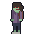 | Cadena de pisotones | Pisar varios zombies sin tocar el piso: 100 → 200 → 400 → 800 → 1000 puntos, y el sonido sube de tono. |
| Virus volador | Recorrido fijo (ascensor, péndulo, ocho, círculo): obstáculo de timing que se esquiva. Lastima a Lio y contagia zombies. | |
| Contagio | Un zombie contagiado (contorno rojo y gas) necesita dos pisotones y escupe minivirus que persiguen a Lio. Se cura a los 6 s. | |
| La horda (L1) | Una estampida de zombies cruza el río en bucle: se corre encima como si fuera un piso móvil. | |
| Mochila y planeo | Desde que se encuentra (L1), mantener el salto mientras se cae baja la caída de 600 a 80 px/s. | |
| Antídotos | 4 por nivel (L1 y L2), en rutas opcionales. Los 4 dan una vida extra. | |
| Pruebas del brote | 7 notas que congelan el juego al agarrarlas y quedan en la mochila. | |
| Postes y cables | Se trepa el poste y se cruza por arriba de los cables, sobre el agua (L1) o el charco (L3). | |
| Rebote | El colchón (L1) y el toldo (L3) lanzan a Lio hacia arriba. | |
| Piso encerado (L2) | Resbala: cuesta frenar antes de un zombie o de un pozo. | |
| Tubo que estalla (L2) | Al pasar por encima, el tubo roto se rompe y suelta un virus que persigue desde atrás. | |
| Ductos de aire (L2) | Elevan a Lio: uno es obligatorio, para pasar el gabinete, y otros llevan a rutas opcionales. | |
| Pistones (L2) | Suben al ras del piso y se hunden. Luz verde = firme, roja = está por bajar. | |
| Charco electrificado (L3) | Pisarlo es como caer a un pozo: −1 vida y al checkpoint. | |
| Vapor del subte (L3) | Ciclo aviso → sopla → nada; eleva a Lio a las marquesinas. | |
| Policía que dispara (L3) | Aviso de medio segundo y un tiro al pecho: se esquiva con un salto planeado. | |
| El jefe (L3) | Embiste con la motosierra y se le traba en una pila de patrulleros: esa es la única ventana para pisarlo. |
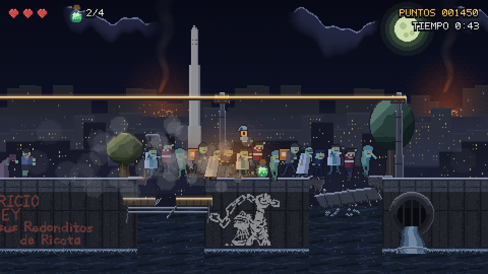
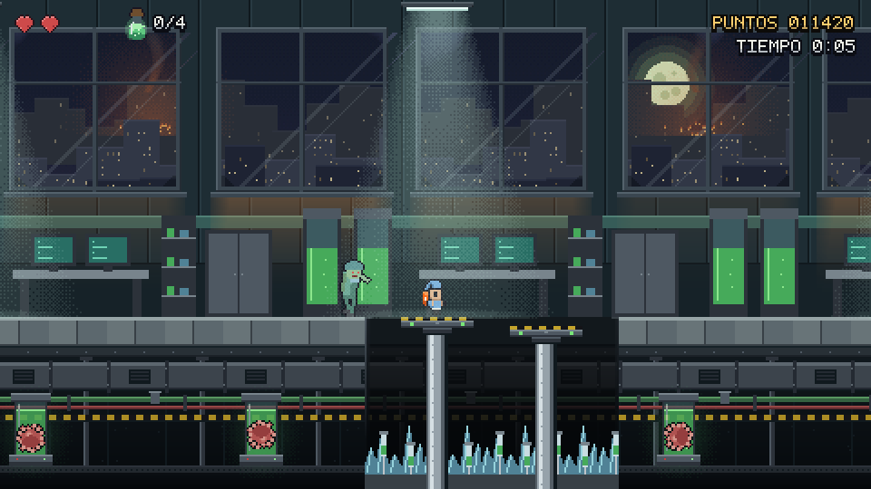
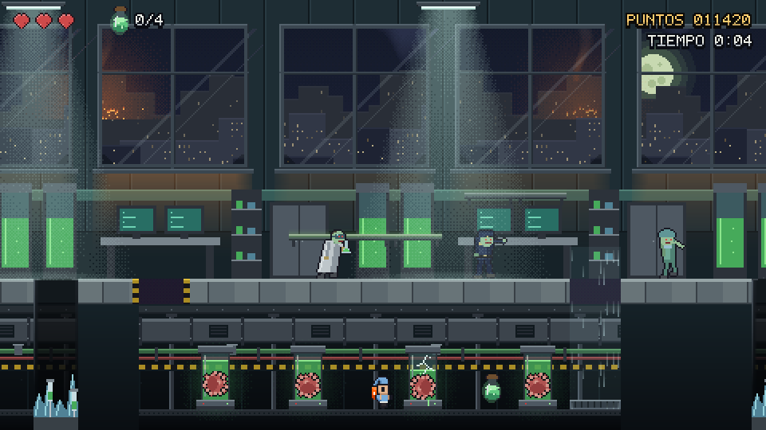
Cada nivel suma pocas mecánicas nuevas y reusa las anteriores:
| Escena | Mecánicas nuevas | Qué exige |
|---|---|---|
| Tutorial | Caminar, saltar, trepar, planear, pisotón | Nada: no se puede perder. |
| Nivel 1 | Virus volador, contagio, puentes, postes y cables, la horda, la mochila | Leer patrones simples y cruzar el río sobre la horda. |
| Nivel 2 | Pozos con vidrios, tubos que estallan, ductos, piso encerado, pistones | Timing: frenar a tiempo y leer las luces de los pistones. |
| Nivel 3 | Policía que dispara, toldo, charco, vapor y marquesinas, el jefe | Todo junto: los 13 tipos de zombie y una pelea final en 3 fases que se pone más rápida. |
Apartados "Controles", "Información dentro del juego" y "Sistemas de menú" de la plantilla del DDJ (Thompson, pág. 107). Hacen también de manual de uso (punto 5 de la consigna, opcional).
El juego se juega solo con teclado; el mouse sirve solo en las pantallas de fin de nivel. Cada acción tiene dos teclas: las flechas o WASD, y Espacio o J para saltar. Con WASD + J, una mano mueve y la otra salta.
| Acción | Teclas | Detalle |
|---|---|---|
| Caminar | ← → / A D | Velocidad máxima 95 px/s. En el piso encerado del Nivel 2 cuesta frenar. |
| Saltar | Espacio / J | ~37 px de alto. Parado salta ~28 px de largo; con carrera, 40–45. |
| Planear | Mantener Espacio / J mientras cae | Solo con la mochila puesta: la caída máxima baja de 600 a 80 px/s. No sube, solo cae más despacio. |
| Trepar | ↑ ↓ / W S | En postes de luz y escaleras. |
| Pisotón | Caerle encima a un zombie | Única forma de eliminarlo. Rebota a Lio hacia arriba; encadenar pisotones sin tocar el piso suma más puntos. |
| Pausa | ESC / P | Congela el juego y el reloj. |
| Acción | Teclas |
|---|---|
| Volumen de música | ← → |
| Volumen de efectos | ↑ ↓ |
| Reiniciar el nivel | R |
| Volver al menú principal | M |
| Abrir la mochila (pruebas del brote) | I |
| Reanudar | ESC / P |
Dentro de la mochila: ← → elige la nota; I, ESC o P vuelven a la pausa.
| Pantalla | Teclas |
|---|---|
| Nota recién agarrada | Se cierra al soltar J, Espacio, Enter o ESC (después de medio segundo), o sola a los 6 s. Se cierra al soltar para que Lio no salte al volver al juego. |
| Victoria | Espacio o click: siguiente nivel (en el Nivel 3, al menú) · R: repetir el nivel · ESC: menú |
| Game Over | R o click: reintentar el nivel · ESC: menú |
| Menú principal | ↑ ↓ / W S: elegir · Enter, Espacio o J: aceptar · O: opciones · ESC: salir |
| Opciones | ← →: música · ↑ ↓: efectos · ESC: volver |
| Iniciales del TOP 5 | ↑ ↓ / W S: cambiar letra · → / D / Enter / J / Espacio: siguiente · ← / A / Backspace: anterior |
Todo en una fuente pixel propia, en la capa de interfaz (no se mueve con la cámara).
| Dónde | Qué muestra |
|---|---|
| Arriba a la izquierda | Corazones: las vidas (empieza con 3; hasta 4 con la vida extra de los antídotos). |
| Al lado de los corazones (L1 y L2) | Frasco + "n/4": antídotos del nivel; el número se pone verde con 4/4. |
| Arriba a la derecha | PUNTOS 000000 en ámbar: el total de la partida más lo ganado en el nivel. |
| Debajo de los puntos | TIEMPO m:ss: el reloj del nivel; se pone rojo al pasar el tiempo par (ya no da bonus). |
| Arriba al centro (L3) | PACIENTE ZERO n/3: la vida del jefe, en rojo, cuando empieza la pelea. |
| Sobre el zombie o el frasco | Números arcade ("+100", "+200"…) que saltan, titilan y desaparecen. |
| En la arena (L3) | Cartel "¡PISALO!" titilando mientras el jefe está clavado (primera fase). |
| Sobre Lio | La mochila en la espalda, que se da vuelta con él. |
Algunas señales van en el propio mundo, no en el HUD:
MENÚ PRINCIPAL ──Jugar──► TUTORIAL ──► NIVEL 1 ──► NIVEL 2 ──► NIVEL 3 ──► MENÚ │ └─Opciones (volúmenes) │ ▲ (victoria de cada nivel) │ ▼ │ │ PAUSA ─ I ─► MOCHILA (pruebas) └─ al volver con un puntaje del TOP 5: INGRESÁ TUS INICIALES
Debajo va el desglose del puntaje: nivel, meta +1000, vidas ×500, tiempo con su bonus, antídotos 4/4 +1000, pruebas 7/7 +1000 (solo en L3) y el total, con "¡NUEVO RÉCORD!" si corresponde.
Estructura del mundo. Lineal, de izquierda a derecha: Tutorial + 3 niveles en secuencia, cada uno con 7–8 checkpoints. Se ramifica en rutas opcionales cortas que vuelven al camino principal: antídotos altos, el corredor del subsuelo y los ductos de L2, notas escondidas.
Física (comportamiento Platformer Character de GDevelop):
| Parámetro | Valor |
|---|---|
| Velocidad máxima | 95 px/s |
| Aceleración / frenado | 300 / 1500 px/s² (en el piso encerado frena mucho menos) |
| Velocidad de salto | 350 px/s |
| Gravedad | 900 px/s² |
| Caída máxima | 600 px/s (80 planeando) |
| Alcance medido | ~37 px de alto; ~28 px de largo parado, 40–45 con carrera |
Las reglas de diseño de niveles salen de esos números: huecos de hasta 28 px sin ayuda; los más anchos llevan puente, cables, la horda o pistones.
Equipo y efectos personales. No hay armas ni power-ups temporales. Lo que se lleva:
Apartados "Movimiento e interacción", "Salud y poder" y "Personajes no jugadores" de la plantilla del DDJ (Thompson, págs. 106–107). La ficha de Lio cubre el punto 9.b de la consigna (actualiza la ficha de la primera entrega). Referencia de velocidades: Lio corre a 95 px/s. Todos los personajes miden 32×34 px salvo el jefe (48×51).
| Nombre | Lio (guiño a Messi; lleva la camiseta celeste y blanca) |
| Rol en la historia | Héroe: el único humano inmune al virus |
| Arquetipo | El sobreviviente reluctante / el explorador |
| Personalidad | Sin entrenamiento de combate, decidido; corre antes que pelear |
| Habilidad | Elimina zombies cayéndoles encima (pisotón). No tiene armas. |
| Movimiento | Correr, saltar y trepar postes y escaleras. Planear desde que encuentra la mochila de repartidor (Nivel 1). |
| Vidas | 3, y una cuarta si junta los 4 antídotos de un nivel |
| Daño | Pierde 1 vida si un zombie lo toca de costado o si lo golpea un virus o un tiro. Lo empuja hacia atrás y queda invulnerable 1 s, parpadeando. Caer a un pozo, al agua o al charco electrificado le saca 1 vida y lo devuelve al último checkpoint. |
| Objetivo | Llegar al foco de la infección y derrotar a Paciente Zero |
| Estrategia | Cruzar la ciudad, sobrevivir a la horda, juntar antídotos para tener margen y las pruebas para entender qué pasó |
Sprite. 32×34 px, contorno de 1 px. La base es Forest Boy (CC0, OpenGameArt, rehash de Classic Hero de GrafxKid): recortado, reescalado y recoloreado a la camiseta argentina (en el original era verde). Es el único personaje que no es 100 % propio.
Animaciones:
La mochila se dibuja aparte, en la espalda, y se da vuelta con él.
| Con qué | Qué pasa |
|---|---|
| Zombie, desde arriba | Lo elimina (o le quita el contagio, si está infectado) y rebota. Encadenar pisotones sin tocar el piso: 100 → 200 → 400 → 800 → 1000 puntos. |
| Zombie, de costado | −1 vida y empujón. |
| Virus / minivirus / tiro | −1 vida y empujón. |
| Toldo, colchón | Rebote alto (el toldo de L3 lo sube ~84 px, por encima del policía). |
| Vapor del subte, ductos de aire | Lo elevan. |
| Horda (L1) | Funciona como piso móvil: se corre encima para cruzar el río. |
| Poste, escalera, cables | Se trepa / se cruza colgado por arriba. |
| Antídoto | +250 puntos; los 4 del nivel dan una vida extra. |
| Prueba del brote | Se lee la nota y queda guardada en la mochila. |
| Mochila (L1) | Desbloquea el planeo para el resto del juego. |
Un solo comportamiento, muchas siluetas. Todos los zombies:
Lo que cambia entre ellos es el aspecto, la manera de caminar y la velocidad, para que cada uno se reconozca de lejos sin sumar reglas nuevas. Todos comparten la paleta "familia" (piel verde, ojos rojos) y tienen 8 cuadros de caminata (la vecina, 10).
| Zombie | Aspecto y andar | Velocidad (px/s) | Dónde aparece |
|---|---|---|---|
| Vecina | Melena larga, vestido rosa roto; arrastra los pies | 18–22 | L1, L3 |
| Obrero rengo | Camisa azul rota, herida en el hombro; una pierna tiesa como pata de palo | 18–22 | L1 (también la "marcha"), L3 |
| Arrastrada | Alta y consumida, cárdigan mostaza; arrastra una pierna a los tirones | 12–22 | L1, L3 |
| Adolescente | Buzo con capucha, mochila al hombro; pasitos rápidos con tics | 16–26 | L1, L3 |
| Anciana | Muy encorvada, pañuelo, bata larga; lentísima | 8 | L1, L3 |
| Obrero de obra | Casco y chaleco reflectivo; renguera pesada | 13–18 | L1, L3 |
| Corredor | Ropa deportiva y vincha, volcado hacia adelante; el más rápido | 34–45 | final de L1, L3 |
| Médico | Guardapolvo abierto sobre ambo turquesa, estetoscopio; el zombie "clásico" con los brazos al frente | 20–22 | horda de L1, L2, L3 |
| Enfermera | Ambo verde agua, gorro de quirófano; se tambalea, un brazo muerto | 20–26 | horda de L1, L2, L3 |
| Investigador | Guardapolvo, antiparras y un matraz verde; encorvado y lento | 12 | horda de L1, L2, L3 |
| Hincha | Camiseta bordó, bufanda; camina "alentando" con los brazos arriba | 18–24 | horda de L1, L2, L3 |
| Repartidor | Campera, gorra y la mochila cúbica naranja; encorvado y rápido | 22–30 | horda de L1, L2, L3 |
| Policía | Uniforme azul, gorra; tieso, casi marcial. En L3 dispara | 16–22 | horda de L1, L2, L3 |
Variaciones de comportamiento:
Si un virus toca a un zombie, el zombie se contagia:
Límite por nivel: cada zombie se contagia 1 vez en L1, 2 en L2 y sin límite en L3.
| Virus volador | Minivirus | |
|---|---|---|
| Aspecto | Coronavirus de 16×16, 6 cuadros: el cuerpo "respira" y las 14 espigas vibran. Paleta rosa/roja de 4 tonos. | El mismo sprite. |
| Movimiento | Recorrido fijo según el lugar: ascensor (sube y baja), péndulo (barre y baja en el medio), ocho o círculo. Pensado como obstáculo de timing: la espera máxima es ~1 s. | Persigue a Lio: vuela a 55 px/s y cada nuevo rumbo apunta hacia él (±35°). Vive 5 s en L1 y 8 s en L2/L3, y se desvanece. |
| De dónde sale | Puesto en el nivel (5 en L1, 3 en L2, 3 en L3). | Lo escupe un zombie contagiado, sale de un tubo de contención roto (L2), lo escupe el jefe o cae del cielo de la arena. |
| Qué hace | −1 vida y empujón. Contagia a los zombies que toca. | −1 vida y empujón. No contagia. |
Los dos brillan más cuanto más cerca está Lio (ámbar en la calle, verde en el laboratorio). No se pueden eliminar: se esquivan.
Quién es. El científico que trabajaba en el laboratorio del Nivel 2 y escribió el diario. Soltó el virus a propósito en el festejo del Obelisco: quería "un ejército que no protesta, no vota, no pide aumento". Es un zombie más, dibujado con las mismas piezas que el médico y el investigador, pero una vez y media más grande (48×51):
Animaciones:
Patrón de combate (pensado para un juego donde solo se ataca saltando):
| Estado | Qué hace | Fase 3 (3 vidas) | Fase 2 | Fase 1 |
|---|---|---|---|---|
| Camina | Va hacia Lio | 35 px/s | 45 px/s | 55 px/s |
| Apunta | Aviso: se agacha, contorno rojo, chispazo | 1,0 s | 0,85 s | 0,7 s |
| Embiste | Carga en línea recta | 170 px/s | 205 px/s | 240 px/s, dos veces: la primera hacia el otro lado, rebota, y la segunda se clava del lado de Lio |
| Trabado | La motosierra se le traba en una pila de patrulleros: única ventana para pisarlo; de costado no lastima | 3,0 s | 2,6 s | 2,2 s |
Cómo cambia cada fase:
Al morir suelta la séptima prueba, "Última página". La victoria llega al leerla.
Cómo se llegó a esta pelea. La primera versión (un ciclo telegrafía → ataque → expuesto, como la del avance) "no se entendía y no era entretenida" en el playtest de punta a punta. Además, si quedaba expuesto contra el borde de la arena, abajo de las estatuas, costaba pisarlo. La pelea nueva hace que el jefe se clave solo en un lugar visible. Los bustos se corrieron 22 px para que nunca quede debajo de una plataforma.
Todos los personajes, salvo la base de Lio, se dibujaron por código (Python + Pillow), sin IA de imagen. Tiras de caminata de 8 cuadros (la vecina, 10):

Los dos objetos de la primera entrega, con sus paletas:
| Personaje / objeto | Animaciones (cuadros) |
|---|---|
| Lio | Idle (11), Run (12), Jump (1), Fall (1, también el pisotón), Hit (7), Death (7) |
| Zombies (13 tipos) | Walk (8; la vecina, 10). Al morir: ráfaga de "píxeles" del color del zombie. |
| Multitud de fondo (L3) | Walk (8–10), en silueta |
| Paciente Zero | Walk (6), Carga (3), Expuesto (4) |
| Virus / minivirus | Idle (6): el cuerpo respira y las espigas vibran |
| Antídoto, mochila, nota en el piso | Idle (6) |
| Tubos de contención | Idle (4); el roto, además, Vacía (1) |
| Pistón, toldo | 2 cuadros (luces verde/roja; rebote) |
| Fuego, humo, chispas, banderas, sirenas | 2 a 6 cuadros |
Además hay efectos que no son cuadros: el contorno de color (contagio, aviso del jefe), el brillo por cercanía de los virus y los bordes de plataforma, y partículas (el gas del contagio, el humo de la horda, la ráfaga al morir un zombie).
Apartado "Walkthrough del juego" de la plantilla del DDJ (Thompson, pág. 107): niveles paso a paso, mapas, ubicación de los PNJ y encuentros. Los rótulos (C1, A1, N1, Z, V…) y las x son los de los mapas que acompañan cada nivel. La x es la posición en píxeles del juego (la pantalla mide 480×270). Duración: la primera partida completa (Tutorial + 3 niveles) lleva entre 15 y 30 minutos, según la habilidad del jugador.
Referencias de los mapas:
| Rótulo | Qué es |
|---|---|
| INICIO / META | Dónde aparece Lio / fin del nivel |
| C1, C2… | Checkpoint: si Lio cae o pierde una vida, vuelve ahí |
| A1–A4 | Antídoto (4 por nivel en L1 y L2; los 4 = vida extra) |
| N1–N7 | Prueba del brote (nota del diario de Paciente Zero) |
| Z / HORDA | Zombie que patrulla / la horda del Nivel 1 |
| V | Virus volador (recorrido fijo, contagia zombies) |
| Azul | Mecánica (toldo, poste, pistones, ducto, vapor…) |
| Amarillo | Peligro (agua, pozo, vidrios, charco, tubo roto) |
| Bloques | Celeste: plataforma maciza · amarillo: se atraviesa desde abajo · verde: escalera |
---
Una calle corta y segura, sin manera real de perder. Cada cartel enseña una cosa y aparece cuando Lio llega a esa zona:
La mochila del Tutorial es de práctica: la de verdad se encuentra en el Nivel 1.
---
Qué propone: el primer contacto con el brote, de noche junto al río. Enseña el pisotón con zombies sueltos y lentos, el plataformeo con mobiliario de la ciudad (banco, toldo, balcón, colchón), los virus que contagian zombies y cierra con la mecánica propia del juego: cruzar el río corriendo encima de la horda. En el camino aparece la mochila.
| Tramo (x) | Qué pasa | Opcional |
|---|---|---|
| 1. Arranque (0–420) | Calle tranquila con pintada de "Las Malvinas son argentinas". Un virus sube y baja en el lugar (V, x 150): enseña a esperar el momento. Plataformeo de la ciudad: banco → toldo → balcón y escalera de incendio. El colchón rebota. | A1 en el piso (x 115). A2 arriba del balcón (x 265): se llega trepando por toldo y balcón. |
| 2. Primer hueco y los primeros zombies (420–860) | El agua del río corta la vereda (AGUA, x 335) y se cruza por un puente. Después de C1 patrullan los primeros zombies (vecina, obrero, arrastrada, adolescente), separados para aprender el pisotón de a uno. Un virus péndulo baja sobre el camino (V, x 620), y zombies de "marcha" cruzan solos. | — |
| 3. Postes y cables, la mochila (860–1180) | Hueco con agua: se trepa un poste, se cruza por los cables y se baja por el otro (C2). Un virus sube y baja en medio del puente (V, x 926). Justo después está la MOCHILA (x 950): desde acá Lio planea, y la conserva el resto del juego. | A3 abajo, entre los postes (x 890). N2 "Remito" junto a la mochila (x 1010), la primera nota que se encuentra. |
| 4. Antes del río (1180–1700) | Más postes y puentes sobre huecos (C3, C4). Al pasar x 1300 se arma la horda. | N1 "El plan" (x 1232). A4 (x 1450). Puente alto (x 1325). |
| 5. El cruce del río sobre la horda (1700–1990) | El hueco grande (x 1730–1966): muro roto, alambre de púas y hierros abajo. No hay puente: se cruza corriendo encima de la estampida de zombies, que funciona como piso móvil. Caer = −1 vida y volver a C6. La horda pasa en bucle, así que si se pierde una, viene otra. | — |
| 6. Final (1990–2600) | Después de C7, el tramo más cargado: 6 zombies seguidos (entre ellos el corredor) y dos virus que giran en círculos opuestos (V, x 2250 y 2460). Pintada "#Yo apoyo la Ley de Financiamiento Universitario" antes de la META (x 2569). | N3 "Mensajeros" (x 2220), en la zona de virus: explica el contagio. |
Encuentros clave: el contagio. Si un virus toca a un zombie, el zombie queda con contorno rojo y suelta gas: hay que pisarlo dos veces y además escupe un minivirus que persigue a Lio. En este nivel cada zombie se contagia una sola vez.
---
Qué propone: el interior donde empezó todo. Más zombies (el personal del laboratorio y gente de la calle que se coló), pozos con vidrios rotos y mecánicas que piden timing: piso encerado, pistones hidráulicos y tubos de contención que estallan. Hay dos ductos opcionales que premian explorar. La mochila ya viene puesta y se planea en todo el nivel.
| Tramo (x) | Qué pasa | Opcional |
|---|---|---|
| 1. Entrada (0–448) | Pasillo con estantes. Un tubo de contención roto en el subsuelo (x 133) estalla cuando Lio pasa por encima y suelta un virus que lo persigue desde atrás: enseña a seguir corriendo. Una enfermera patrulla. Primer pozo con vidrios (x 420). | A1 en el piso (x 150). |
| 2. Estantes (448–928) | Desde C1: médico, repartidor e inválido (el más lento) patrullando; un virus vuela en ocho (V, x 710). Estantes a dos alturas. Pozo (x 900). | A2 arriba del estante alto (x 675). |
| 3. El ducto del subsuelo (928–1378) | Dos caminos. Arriba: inválido y policía patrullando sobre la losa. Abajo: la escotilla (bordes de peligro, x 966–994; caer ahí no lastima) lleva a un corredor en la sala de contención, con un tubo que estalla, y se sale flotando por un ducto de aire (DUCTO, x 1236). Al bajar se puede pisar a la enfermera. Pozo (x 1350). | N4 "Personal" sobre el estante largo (x 1125). A3 en el corredor del ducto (x 1180). |
| 4. Pasillo largo (1378–1728) | Desde C3: médico, hincha y enfermera, un virus péndulo (V, x 1550), estantes y un tubo roto (x 1482). Pozo (x 1700). | — |
| 5. Piso encerado (1728–2178) | Zona a oscuras con cartel de piso mojado: Lio resbala y cuesta frenar antes de un zombie o de un pozo. Inválido, médico y un virus que gira (V, x 1980). Pozo (x 2150). | — |
| 6–7. Pistones hidráulicos (2178–2960) | Dos pozos anchos (x 2480, 2 pistones; x 2760, 3 pistones). Cada pistón sube al ras del piso y se hunde: luces verdes = firme, rojas = está por bajar. Van en ola: cuando el tuyo se pone rojo, el de adelante acaba de subir en verde. Quedarse quieto = caer. | — |
| 8. Zona de alarma y salida (2960–3800) | Balizas rojas y tinte de alarma. Policía, y un ducto de aire obligatorio (x 3080) para pasar por encima del gabinete. Después: repartidor, un tubo roto, médico e hincha hasta la META (x 3720). | N6 "Anomalía" en el piso justo después del gabinete (x 3168). Ducto opcional (x 3400): sube hasta A4 y N5 "El antídoto". |
Encuentros clave: el tubo que estalla detrás (el virus persigue, se escapa corriendo), los pistones (lectura de la luz) y el piso encerado (frenar a tiempo). En este nivel cada zombie se contagia como mucho dos veces.
---
Qué propone: la síntesis y el final. Lio sale del laboratorio y cruza el centro tomado, entre edificios, hasta el Obelisco. Vuelven todos los zombies del juego (18 jugables, uno de cada tipo salvo el del jefe), más una multitud en silueta en la vereda de enfrente que no lastima. Sin pozos: los desafíos son peligros de la calle. En este nivel no hay antídotos.
| Tramo (x) | Qué pasa |
|---|---|
| 1. Salida del laboratorio (−2140 a −1780) | Médico, inválido y enfermera (C1). La pared rota da a la calle. |
| 2. La calle del hospital (−1780 a −1340) | Fachadas porteñas tapiadas, autos quemados y un patrullero en llamas. Vecinos de L1 (obrero, vecina) y un virus ascensor. El policía zombie dispara: aviso de medio segundo (destello en la mano y clic) y un tiro a la altura del pecho; se esquiva con un salto planeado. Antes, un toldo que rebota (x −1504) lanza a Lio por encima del policía. |
| 3. La plaza (−1340 a −900) | Tramo abierto de respiro (C3): árboles y banco que se pisan, un colectivo cruzado en la calle. La anciana (lentísima), el obrero, la arrastrada, la enfermera que "se escapó del hospital" y un virus péndulo. |
| 4. Obra en Corrientes (−900 a −380) | Un charco electrificado (cable de alta tensión caído) cubre la vereda (x −810 a −600): pisarlo = −1 vida y volver a C4. Se cruza trepando un poste y por los cables, con un virus que gira encima. Después, el repartidor y el corredor (el zombie más rápido). |
| 5. Llegando al Obelisco (−380 a 0) | Una marcha de zombies avanza hacia Lio. Por arriba, los respiraderos del subte soplan vapor en ciclos (aviso → sopla → nada) y suben a Lio a las marquesinas, que pasan por encima de la marcha. Alambre de púas de la barricada antes de la arena. |
| 6. Arena: Paciente Zero (0 a 480) | Al entrar, la barricada se cierra detrás, la cámara se traba y aparece el cartel del jefe (C7). Ver abajo. |
El jefe es el científico que empezó todo: guardapolvo abierto con la camiseta de Argentina, anteojos y una motosierra. La arena es la 9 de Julio: el Obelisco al centro y, detrás, la torre con el mural de Evita; a los costados, dos pilas de patrulleros destruidos que humean, y dos bustos de próceres con barbijo que sirven de trampolín.
| Fase (vidas del jefe) | Qué cambia |
|---|---|
| 3 | Lento y sin zombies. Cartel "¡PISALO!" mientras está clavado. |
| 2 | Más rápido; entran zombies a la arena (uno cada 1,8 s, alternando los lados; sirven de trampolín) y escupe virus al desclavarse. |
| 1 | Se agranda y embiste dos veces: la primera hacia el lado contrario a Lio, rebota, y la segunda se clava del lado de Lio. |
En las tres fases cae del cielo un coronavirus que persigue a Lio cada 4 s (como mucho 3 a la vez), salvo mientras el jefe está clavado.
Al morir suelta la N7 "Última página". La victoria llega al leerla, con el desglose final (bonus de +1000 con las 7 pruebas). Después, el TOP 5.
---
| Escena | Checkpoints | Antídotos | Pruebas | Zombies |
|---|---|---|---|---|
| Tutorial | — | 2 (práctica) | — | 1 de práctica |
| Nivel 1 | 7 | 4 | N1, N2, N3 | 15 + la horda |
| Nivel 2 | 8 | 4 | N4, N5, N6 | 17 |
| Nivel 3 | 7 | — | N7 (la suelta el jefe) | 18 + la multitud + los que entran a la arena |
Duración total: entre 15 y 30 minutos la primera vez, según la habilidad del jugador.
Todo el audio es procedural: sintetizado con Python y numpy en estilo chiptune. No se usaron bancos de sonidos (se descartó el material CC0) ni audio generado por IA.
| Tipo | Sonidos |
|---|---|
| Música | Tema del menú (también en el Tutorial) y un loop para los niveles. |
| Colisiones | Pisotón (sube de tono con cada pisotón encadenado), daño de Lio, agarrar antídoto o nota. |
| Juego | Salto, selección en menús, victoria, game over. |
| Ambiente | Zumbido de los tubos del lab (en loop, más fuerte cerca de un tubo prendido), chispazo cuando un tubo cambia de estado, crepitar del fuego en L1 (más fuerte cerca de un tacho). |
| Avisos | Chispazo grave antes de que un zombie contagiado escupa; gatillo y disparo del policía. |
El volumen de música y de efectos se ajusta en Opciones y en la pausa. El zumbido del laboratorio se calla en la pausa, en las notas y al terminar el nivel.
Responde al foco que la cátedra pidió desde la Pre-Alfa (29/09): validación de mecánicas, detección temprana de errores y playtesting con usuarios reales. Va como apéndice del DDJ (Thompson, pág. 107: "Apéndices").
El juego se probó de cuatro maneras, que se complementan:
| Método | Qué detecta | Cómo se hizo |
|---|---|---|
| Playtest a mano (desarrollador) | Sensación, ritmo, lo que "no se entiende" | Jugar cada cambio en el navegador, y periódicamente el juego de punta a punta. |
| Playtest con otras personas | Frustración, dificultad, lectura de la interfaz | Los docentes jugaron y aprobaron el Nivel 1. Una jugadora de 10 años probó el juego. |
| Pruebas automáticas en el juego real | Errores de lógica, valores mal calculados, regresiones | El juego exportado a HTML5 se maneja con un navegador automático (Puppeteer): se simulan las teclas y se leen las posiciones y variables reales. Para el timing fino se usó un robot dentro del juego, que reacciona en el mismo cuadro, porque desde afuera llegaba tarde. |
| Revisión del código compilado | Fallas silenciosas del motor | Después de cada cambio se busca en el JavaScript que genera GDevelop si alguna instrucción quedó descartada ("Unknown instruction"). El validador del proyecto no las detecta. |
Una regla que salió de la experiencia: mover a Lio con teclas de verdad, no teletransportarlo. Así apareció una nota que estaba en un lugar al que no se podía llegar jugando (ver abajo).
| Mecánica | Prueba | Resultado |
|---|---|---|
| Salto | Medido en el juego: alto y largo, parado y con carrera | ~37 px de alto; ~28 px de largo parado, 40–45 con carrera. Todos los huecos se diseñaron con estos números: ≤ 28 px sin ayuda; más anchos llevan puente, cables o pistones. |
| Pisotón y contagio | Pisar zombies sanos e infectados; 3 virus seguidos al mismo zombie | Sano: muere. Infectado: necesita 2 pisotones. Límite de contagios por zombie: 1 en L1, 2 en L2, sin límite en L3 (verificado en los 3). |
| Horda (L1) | Montarla, chocarla de costado, caer al río | Se cruza encima; el choque saca 1 vida; caer vuelve al checkpoint. La horda pasa en bucle: nunca queda el jugador sin forma de cruzar. |
| Piso encerado (L2) | Distancia de frenado | 71 px de deslizamiento contra 3 px en el piso normal. |
| Pistones (L2) | Robot "jugador prudente": se frena en el borde, salta parado y nunca salta a un pistón en rojo | 10/10 cruces de los dos pozos sin perder vidas. Quedarse quieto sobre un pistón: cae a los ~2,4 s. |
| Policía que dispara (L3) | Robot con la mochila esquivando los tiros | 7/7 esquivados con un salto planeado. |
| Toldo, charco y vapor (L3) | Teclas reales | El toldo sube a Lio ~84 px; el charco saca 1 vida y lo devuelve al checkpoint; el vapor lo deja en la marquesina. |
| Jefe (L3) | Robot que lo pisa desde el busto en las 3 fases | Se clava en x 89 / 343, el pisotón entra en las 3 fases, la doble embestida termina del lado de Lio, suelta la nota 7. |
| Pausa, notas y reloj | Abrir y cerrar en los 3 niveles; medir el reloj | Congelan el juego y el reloj; al cerrar una nota Lio no salta. |
| Puntaje y TOP 5 | 7 partidas seguidas, recargar la página, Game Over → ESC | La tabla se ordena bien, persiste y anota el puntaje que mostraba el HUD. |
| Flujo de escenas | Menú → Tutorial → L1 → L2 → L3 → menú, con victoria, Game Over y reintento | Completo, sin pantallas sin salida. |
| Problema | Cómo se detectó | Arreglo |
|---|---|---|
| Hueco imposible en el Nivel 2 | Cálculo con el salto medido | Rediseñado según el alcance real del salto. |
| Estantes de L2 inalcanzables | Prueba automática | Reubicados al alcance del salto. |
| La nota 6 (arriba del gabinete) no se podía agarrar jugando | Moviendo a Lio con teclas, no teletransportándolo | La nota pasó al piso, después del gabinete. |
| Una plataforma invisible "flotaba" en el aire en L1 (el piso de la horda, activo cuando la horda no estaba) | Playtest: "plataforma invisible pasando a la anciana" | Solo es plataforma mientras la horda corre. |
| La salida del ducto de L2 quedaba a 18 px de un pozo: con la flecha apretada, Lio caía | Prueba con teclas | Salida movida: 82 px de piso antes del pozo. |
| El tubo roto del ducto estallaba con Lio llegando y el virus le salía encima: golpe seguro | Prueba con teclas | Ahora estalla cuando Lio pasa por encima: el virus sale detrás y se lo puede dejar atrás corriendo. |
| El jefe expuesto contra el borde quedaba debajo de las estatuas y costaba pisarlo (2 de 3 pisotones no llegaban) | Simulación | Pelea nueva: se clava en un lugar visible, y los bustos se corrieron 22 px. |
| Con el contagio sin límite, al rato todos los zombies estaban infectados | Playtest | Cura a los 6 s, inmunidad de 3 s y límite de contagios por nivel. |
| Síntoma | Causa | Arreglo |
|---|---|---|
| La pausa no abría | Dos eventos que se deshacían en el mismo cuadro: uno abría, el otro cerraba | Un evento con un estado intermedio. |
| La cura del contagio nunca corría | Un evento "para cada objeto" que el motor compilaba vacío | Corregida la clave que lee el motor. |
| "4 zombies rotos" al final de L1 | Una condición sobre un objeto filtra sus instancias, y las acciones solo afectaban a las filtradas | Separar la acción en un evento sin esa condición. |
| El río de L1 nunca se movió; la niebla quedaba opaca | Acciones de un tipo de objeto sin el prefijo de su extensión: se descartaban al compilar | Prefijo correcto, verificado en el código compilado. |
| Cambiar de escena, efectos y timers fallaban sin aviso | Parámetros de texto sin comillas (o con comillas de más) | Verificación sistemática del código compilado. |
| Con WASD no se podía trepar ningún poste | El motor decide "agarrarse" con otra tecla (Ladder), no con "arriba" | La W simula también esa tecla. |
| Al cerrar una nota con J, Lio saltaba solo | La tecla quedaba registrada al volver al juego | Las notas se cierran al soltar la tecla, con los controles bloqueados mientras están abiertas. |
| En el Tutorial, Lio quedaba cayendo lento para siempre | El planeo no se apagaba en un caso | Corregido el estado del planeo. |
| Al re-ejecutar algunos scripts, el puntaje de L3 se perdía | El script era de cuando L3 era solo la arena | Cableado para los 3 niveles. |
Un error de proceso también dejó regla: el editor de GDevelop tiene que estar cerrado antes de modificar el proyecto por script. Una vez se perdió trabajo porque el editor, al guardar, pisó los cambios. Desde entonces los scripts verifican que esté cerrado y se cortan si lo encuentran abierto.
| Quién | Qué dijo / qué se vio | Qué se cambió |
|---|---|---|
| Docentes | Probaron el Nivel 1 | Aprobado; se tomó como base de calidad para L2 y L3. |
| Jugadora de 10 años | Con los virus volando al azar, "tenés que esperar a que se vaya para pasar": frustrante (en la simulación, esperas de hasta 4–5 s) | Los virus pasan a recorridos fijos (ascensor, péndulo, ocho, círculo): espera máxima ~1 s, se aprende el ritmo. Los minivirus siguen persiguiendo, para que haya contraste. |
| Desarrollador | Las plataformas no se distinguían del fondo: "no se nota qué se pisa" | Bordes que se iluminan al acercarse Lio, y luz de borde en árboles y faroles. |
| Desarrollador | Las camillas móviles del L2 "flotaban" y "no son de las partes más entretenidas" | Reemplazadas por pistones hidráulicos con aviso de luces (piden timing, no solo esperar). |
| Desarrollador | Pelea con el jefe de punta a punta: "no es entretenida y no se entiende" | Pelea nueva: el jefe embiste y queda trabado contra la barricada, fases por vida, cartel "¡PISALO!". |
| Desarrollador | L1 con minivirus: muy entretenido con varios a la vez, pero el final se hacía difícil | Vida del minivirus en L1 bajada de 8 a 5 s. |
| Desarrollador | El disparo del policía desde la cintura "no se veía natural"; las ráfagas dejaban una ventana de salto demasiado chica | Un solo tiro desde la mano, a la altura del pecho, con aviso de 0,5 s. |
| Desarrollador | Los pozos en la calle del Nivel 3 "no tenían sentido en una calle del centro" | Peligros de calle: toldo, charco electrificado, vapor del subte. |
Duración medida: la primera partida completa (Tutorial + 3 niveles) lleva entre 15 y 30 minutos, según la habilidad del jugador (punto 4 de la consigna). El juego ayuda a medirlo:
Planilla para los próximos playtests (una por persona, para tener el detalle por nivel):
| Dato | L1 | L2 | L3 |
|---|---|---|---|
| Tiempo del reloj al ganar | |||
| Game Over (cantidad) | |||
| Antídotos (n/4) | — | ||
| Pruebas encontradas | /3 | /3 | /1 |
| ¿Dónde se trabó o se frustró? |
Preguntas al terminar:
| Diseño, programación, arte y sonido | Walter Frías |
| Sprite base de Lio | Forest Boy — Platformer Animated Character de patvanmackelberg (rehash de Classic Hero de GrafxKid), OpenGameArt.org, CC0 (dominio público). Recortado, reescalado y recoloreado. |
| Motor | GDevelop (open source) |
| Herramientas | Python, Pillow, numpy, Puppeteer, servidor MCP para GDevelop (gb2b/gdevelop-mcp, MIT), Claude Code (asistencia en el código) |
| Testing | Los docentes de la cátedra (Nivel 1) y una jugadora de 10 años |
| Cátedra | Multimedia y Juegos en Web, Tecnicatura Universitaria en Desarrollo Web, UNER. Docentes: Fabien M. Pineda, Hernan I. Hernandez, Juan I. Carubia. |
| Fecha | Versión |
|---|---|
| 26/08/2026 | Primer GDD y High Concept (en el repositorio) |
| Sep. 2026 | Ficha de personaje (primera entrega) |
| 18/09/2026 | Avance del GDD + High Concept, para devolución |
| 29/09/2026 | Pre-entrega Pre-Alfa |
| 03/11/2026 | GDD final (este documento) |